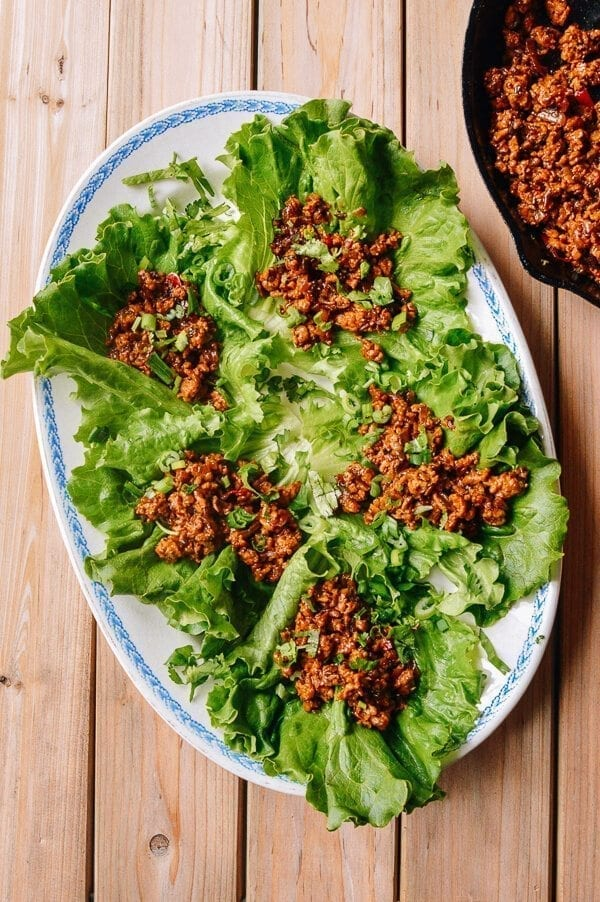

Crispy and golden on the outside, our egg rolls are packed with savory
ingredients like ground pork, cabbage, and carrots. Served with a side
of sweet and sour sauce, these classic Chinese appetizers are sure to please.
Crab Rangoon
Price: $9.00
These crispy wontons are filled with a creamy blend of cream cheese,
crab meat, and scallions. Perfectly fried to a golden brown, our crab
rangoon is a crowd-pleaser that's always in demand.
Lettuce Wraps

Price: $7.50
A fresh and healthy option, our lettuce wraps are filled with seasoned
ground chicken, water chestnuts, and crunchy vegetables. Wrap it up in
a crisp lettuce leaf and top it off with our tangy sauce for a satisfying
appetizer that won't weigh you down.
Spicy Wontons
Price: $8.50
If you're a fan of heat, you'll love our spicy wontons. These tender
dumplings are filled with a mix of ground pork and spices, then tossed
in a fiery chili oil sauce that's not for the faint of heart.
Pork and Shrimp Potstickers
Price: $7.50
These dumplings are a classic Chinese appetizer that never goes out
of style. Filled with juicy pork and succulent shrimp, our potstickers
are seared to perfection and served with a side of soy sauce for dipping.
Dim Sum
Char Siu Bao (Steamed BBQ Pork Buns)
Price: $8.00
Soft and fluffy steamed buns filled with savory and sweet barbecued pork.
Our char siu bao is a popular dim sum item that's perfect for any time of day.
Har Gao (Shrimp Dumplings)
Price: $9.00
These translucent steamed shrimp dumplings are a classic dim
sum dish that never goes out of style. Our har gao is made with
fresh, succulent shrimp and wrapped in a thin, delicate wrapper.
Siu Mai (Shrimp and Pork Dumplings)
Price: $8.50
These bite-sized steamed pork and shrimp dumplings are a
must-try dim sum item. Our siu mai is made with high-quality
ground pork and juicy shrimp, wrapped in a thin, tender wrapper.
Lo Bak Gou (Pan Fried Turnip Cake)
Price: $7.50
Also known as turnip cake, our lo bak gou is made with grated Chinese turnip,
rice flour, and other ingredients, then pan-fried to a golden brown. It's
crispy on the outside and soft and chewy on the inside, making it a tasty
and satisfying dim sum item.
Lo Mai Gai (Sticky Rice In Lotus Leaf)
Price: $7.50
These steamed glutinous rice dumplings are filled with juicy chicken, mushrooms,
and other ingredients, then wrapped in a lotus leaf and steamed to perfection.
Our lo mai gai is a delicious and filling dim sum dish that's perfect for
breakfast, lunch, or dinner.
Noodles
Beef Chow Fun (Wide Rice Noodles)
Price: $14.00
Our beef chow fun is a classic Cantonese noodle dish made with wide
rice noodles stir-fried with tender slices of beef, bean sprouts,
and scallions. It's a hearty and satisfying meal that's perfect
for any time of day.
Dan Dan Noodles (Spicy Sichuan Noodles)
Price: $14.50
These spicy Sichuan noodles are a must-try for any heat-seeker. Our
dan dan noodles are made with chewy wheat noodles tossed in a fiery
chili oil sauce, topped with ground pork, scallions, and peanuts for
an extra crunch.
Hand-Pulled Noodles with Beef Soup
Price: $16.50
Our hand-pulled noodles are made fresh to order, resulting in a chewy and
flavorful noodle that's unlike any other. Served in a rich beef broth with
tender slices of beef, this noodle soup is a comfort food classic that's
perfect for a cold day.
Spicy Beef Noodle Soup
Price: $16.50
Our spicy beef noodle soup is a hearty and flavorful dish that's perfect
for cold weather. Thin wheat noodles are served in a spicy broth with
tender slices of beef, bok choy, and other vegetables, resulting in a
satisfying and warming meal.
Singapore-Style Curry Noodles
Price: $16.00
Our Singapore-style curry noodles are a spicy and aromatic dish that's
perfect for curry lovers. Thin wheat noodles are stir-fried with a flavorful
curry sauce, shrimp, chicken, and vegetables, resulting in a fragrant
and satisfying meal.
Cantonese-Style Wonton Noodle Soup
Price: $16.50
Our wonton noodle soup is a classic Cantonese dish that's simple but delicious.
Thin wheat noodles are served in a clear broth with plump pork and shrimp wontons,
bok choy, and slices of tender roast pork. It's a comforting and flavorful dish
that's perfect for any occasion.
Beef
Beef with Broccoli
Price: $16.00
Our beef with broccoli is a classic Chinese dish that's both healthy and
flavorful. Tender slices of beef are stir-fried with fresh broccoli florets
and a savory brown sauce, resulting in a delicious and satisfying meal.
Mongolian Beef
Price: $17.00
Our Mongolian beef is a popular dish that's both sweet and savory.
Tender strips of beef are stir-fried with scallions, garlic, and a
tangy sauce made with soy sauce and hoisin sauce. It's a crowd-pleaser
that's perfect for any occasion.
Beef and Vegetable Stir-Fry
Price: $16.00
Our beef and vegetable stir-fry is a healthy and delicious option for
any meal. Tender slices of beef are stir-fried with fresh vegetables
like bell peppers, mushrooms, and onions, resulting in a colorful and
flavorful dish that's both satisfying and nutritious.
Kung Pao Beef
Price: $17.00
Our Kung Pao beef is a spicy and flavorful dish that's perfect for
those who love a little heat. Tender slices of beef are stir-fried
with peanuts, scallions, and dried chili peppers, resulting in a dish
that's both sweet and savory, with a bit of a kick. It's a popular
Szechuan dish that's sure to satisfy your cravings.
Desserts
Mango Sticky Rice
Price: $7.50
Our mango sticky rice is a classic Thai dessert that's both sweet and satisfying.
Made with sticky rice cooked in coconut milk and topped with fresh slices of mango,
this dessert is a perfect balance of creamy and fruity flavors.
Egg Custard Tarts
Price: $7.00
Our egg custard tarts are a classic Chinese dessert that are both
rich and decadent. With a flaky crust and a smooth egg custard filling,
these tarts are the perfect sweet treat to enjoy with tea.
Fried Sesame Balls (Jian Dui)
Price: 5.50
Our fried sesame balls are a popular Chinese snack that are both crispy
and chewy. Made with glutinous rice flour and filled with sweet red bean
paste, these balls are coated in sesame seeds and fried until golden brown
for a delicious crunch.
Red Bean Soup
Price: $7.50
Our red bean soup is a comforting and sweet dessert that's perfect for
any occasion. Made with red beans, sugar, and water, this soup is served
hot or cold and can be topped with glutinous rice balls or other sweet
treats for added texture and flavor.
Sweet Taro Soup
Price: $7.50
Our sweet taro soup is a popular dessert that's both creamy and indulgent.
Made with taro root, coconut milk, and sugar, this soup is cooked until thick
and creamy, resulting in a dessert that's perfect for anyone with a sweet tooth.
Drinks
Date Ginger Tea
Price: $3.00
Our date ginger tea is a warm and comforting drink that's perfect for
chilly days. Made with dates, ginger, and honey, this tea is both sweet
and spicy, and has numerous health benefits.
Bubble Tea
Price: $5.50
Our bubble tea is a fun and refreshing drink that's perfect for any
time of day. With a variety of flavors to choose from, including classic
milk tea and fruity options like mango and strawberry, and chewy tapioca
pearls, this drink is a must-try for any bubble tea lover.
Plum Juice
Price: $3.50
Our plum juice is a sweet and tangy drink that's perfect for quenching
your thirst. Made with fresh plums and a touch of sugar, this juice is
both refreshing and delicious.
Soy Milk
Price: $2.50
Our soy milk is a healthy and nutritious drink that's perfect for
those who are lactose intolerant or looking for a dairy-free alternative.
Made with soybeans and water, this drink is rich in protein and low in fat,
making it a great choice for a quick and healthy breakfast.
Tsingtao Beer
Price: $4.50
Our Tsingtao beer is a popular Chinese beer that's light and refreshing.
Brewed with high-quality malted barley and hops, this beer has a crisp
and clean taste that's perfect for pairing with spicy Chinese dishes or
enjoying on its own.